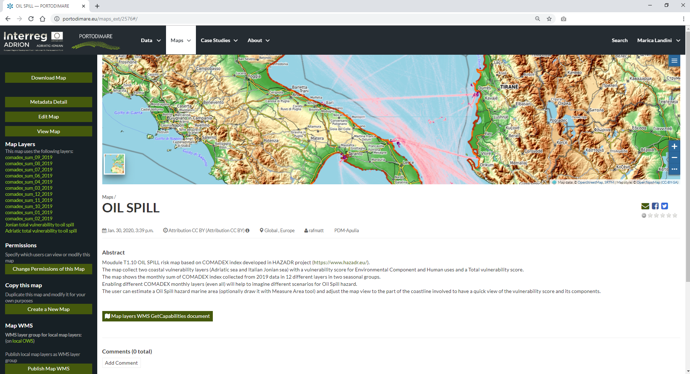

OIL SPILL Module on GAIR¶
Coastal Oil Spill Vulnerability Assessment module implementation in GAIR consists of a risk map based on COMADEX index developed in HAZADR project (https://www.hazadr.eu/).
The map collect two coastal vulnerability layers (Adriatic sea and Italian Jonian sea) with a vulnerability score for Environmental Component and Human uses and a Total vulnerability score.
The map shows the monthly sum of COMADEX index collected from 2019 data in 12 different layers in two seasonal groups.
Enabling different COMADEX monthly layers (even all) will help to imagine different scenarios for Oil Spill hazard.
The user can estimate a Oil Spill hazard marine area (optionally draw it with Measure Area tool) and adjust the map view to the part of the coastline involved to have a quick view of the
vulnerability score and its components.
From Case studies select the Module OIL SPILL menu item, linked to the related map

GAIR case studies menu

OIL SPILL map
See dedicated sections (Exploring Maps) that explain more in depth how to explore and manage maps.